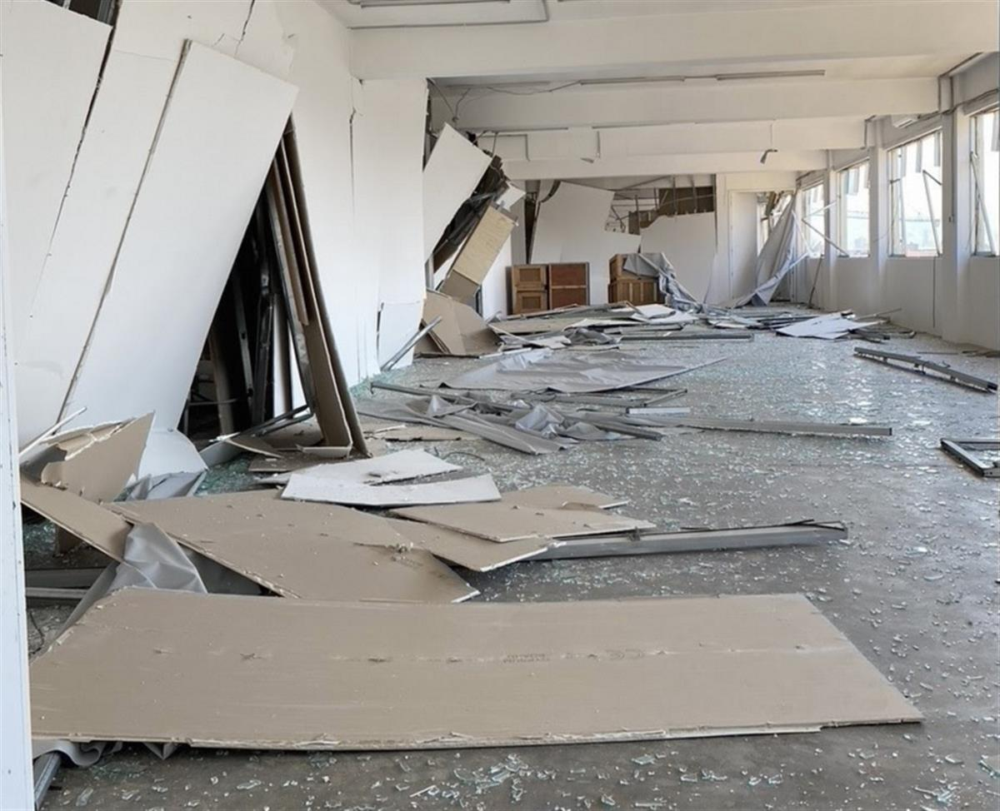
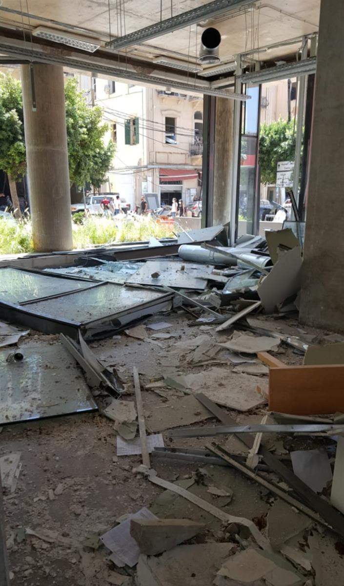

Galerie Tanit in the wake of the explosion. Courtesy of Galerie Tanit.
Naomi Rea, August 10, 2020
Associate Editor, London
Walid Raad, the 2019 Turner Prize Winners, and Other Artists Are Mobilizing to Raise Emergency Funds for Beirut
The joint Turner Prize winners are among those taking action to help the Lebanese capital.
Artists are rallying to raise emergency funds for Beirut in the wake of the tragic explosion last week.
An enormous blast in the port district of the Lebanese capital on August 4 killed at least 160 people and injured 6,000 more. The explosion—which is thought to have been caused by a fire that ignited a large stockpile of explosive material—decimated large swaths of the city, including many art galleries and studios, and left nearly 300,000 people homeless.
Andrée Sfeir-Semler, the owner of Sfeir-Semler Gallery, which was largely destroyed in the explosion, tells Artnet News that they staff have just finished clearing up the bulk of the rubble today. “We could not access our storage area so could not carry out an extensive condition check on everything, but the costs of refitting the space itself are already enormous. Everything is gone,” Sfeir-Semler says.

Sfeir-Semler Gallery in the aftermath of the explosion in Beirut. Image courtesy of Sfeir-Semler.Everything from windows, internal walls, air conditioning and electrical systems, computers, and AV material, have been destroyed. The ceiling in the gallery’s cinema space also collapsed, crushing an expensive projector and sound system.
The damage to the city and its vibrant art community is incalculable, although some estimate the overall losses to be more than $10 billion.
“It is fortunate that we have a highly dynamic art community, with a widespread diaspora jumping in to help,” Sfeir-Semler says. “I am sure it will recover, the Lebanese resilience is legendary—but it will take a lot of work, a lot of effort, and we will have to band together to make it happen.”
Several artists are doing what they can to raise funds for the city. Among them are the joint winners of the 2019 Turner Prize—Lawrence Abu Hamdan, Helen Cammock, Oscar Murillo, and Tai Shani—who have raised $60,000 by donating two limited-edition prints to a fundraiser called Art Relief 4 Beirut. The works are the first the artists have released since forming a temporary collective to receive the prestigious award last year.
The collective’s prints are titled Hey Cupid i! and Hey Cupid ii! They are described cryptically as stills from a work that investigates “the crimes of the 7th Earl of Shaftesbury,” but no further details are given about the work. (The earl, Anthony Ashley Cooper, was a 19th-century social and industrial reformer and evangelist.) The first print, which was an edition of 50 priced at $275 each sold out within an hour, and the second print was an edition of 150 for $275 each.
Art Relief 4 Beirut is a one-man operation run by the Netherlands-based artist Mohamad Kanaan, who tells Artnet News that he has asked artists to donate work for the initiative. Payments are made directly to Impact Lebanon’s disaster relief fundraiser and the Lebanese Red Cross. (Proof of donation must be shown before the artworks are released.)
“Beirut is in urgent need of help, the situation requires everyone to take action to help in any and every way possible,” Kanaan says.
So far, 26 artists have contributed works to the fundraiser, including the Lebanese artists Ali Cherri, Omar Khouri, and Tamara El Samerraei. Since the initiative began on Friday it has raised $77,242.

Galerie Tanit in the wake of the explosion. Courtesy Galerie Tanit.
Elsewhere, the New York-based artist Walid Raad, who was born in Lebanon, is also raising funds to help the city’s hard-hit art community through the Belgian nonprofit Mophradat.
“Right now, people are still missing and the dead are being buried, and the injured (physically and psychologically) being cared for,” Raad, who is the president of the nonprofit’s board, tells Artnet News. The artist adds that several people in the arts community died in the explosion, including Firas Dahwish, who was on staff at Agial Art Gallery, and the renowned architect Jean-Marc Bonfils.
“Spaces like Ashkal Alwan’s Home Workspace, Sursock Museum, the Arab Image Foundation, Zoukak, Sfeir-Semler Gallery, Galerie Tanit, and so many others are devastated,” Raad says. The owner of Galerie Tanit, Naila Kettaneh Kunigk, tells Artnet News that two colleagues were also injured in the blast.
Mophradat will distribute 100 percent of the proceeds from the emergency fundraiser directly to individual artists and arts organizations. (There is widespread concern that Lebanon’s corrupt officials will steal aid that goes through government channels.)
The Dubai-based artist Nima Nabavi has also launched a fundraising initiative through the Third Line gallery, and is selling 15 prints to those who donate at least $50 to the Lebanese Red Cross.
The Arab Fund for Arts and Culture and Culture Resource is also running a solidarity fund to help shelter arts and culture structures in Lebanon from the financial crisis. It recently announced 23 grants of up to $80,000 for arts and culture organizations in Lebanon.
SOURCE: ARTNET NEWS